屏幕共享
屏幕共享把你的整块屏幕或某个窗口实时展示给单聊对象或群成员，适合演示方案、讲解界面和远程协作。共享过程中可以讲话、标注、录制，观看者还可以申请控制你的鼠标和键盘。
- 适用：全体员工，单聊和群聊都可以发起
- 云端录制：需要企业开启「云端录制」开关
- 字幕：需要企业开启「语音字幕」开关
发起屏幕共享
以下任一位置都可以发起：
- 单聊窗或群聊窗头部的显示器图标（鼠标停在上面提示 共享屏幕），见下图。
- 在主面板右键会话、联系人或群，选 共享屏幕给TA 或 共享屏幕到本群。
- 主面板系统菜单或托盘菜单里的 发起屏幕共享：先选择一个联系人或群，再打开对应的聊天窗开始共享。
- 一对一通话中点 共享屏幕，见「语音与视频通话」。
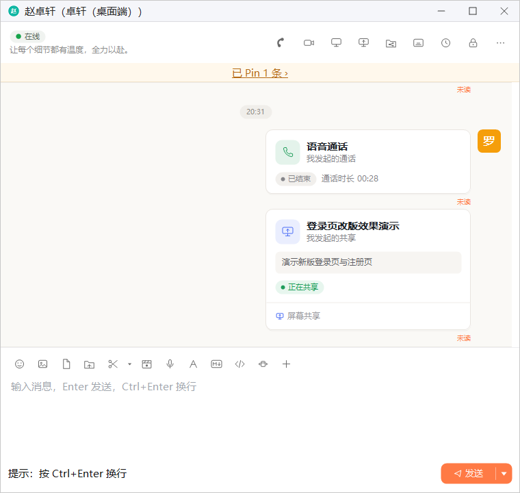
1 2- 共享屏幕：打开「选择要共享的内容」窗口
- 屏幕共享卡片：显示共享标题、描述和状态，对方从这里加入
选择共享内容
点共享入口后会打开「选择要共享的内容」窗口：
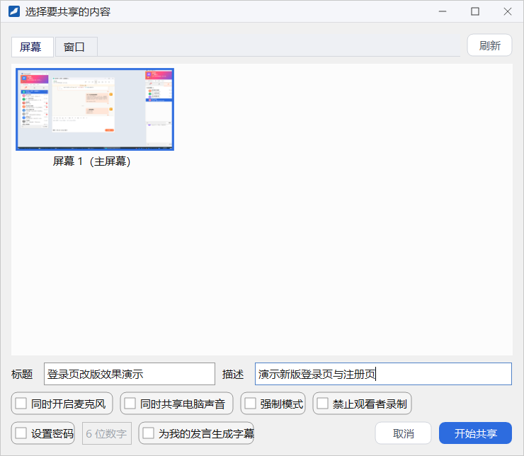
- 在 屏幕 页签里选一块显示器，或在 窗口 页签里选一个程序窗口。列表不是最新时点右上角的 刷新。
- 填写 标题（必填）和 描述（选填），它们会显示在聊天卡片和邀请提示里。
- 按需勾选下方的选项（见下表）。
- 点 开始共享。
| 选项 | 作用 |
|---|---|
| 同时开启麦克风 | 开始共享时就打开麦克风，观看者能听到你讲话；共享中也可以随时在控制条上开关 |
| 同时共享电脑声音 | 把电脑上播放的声音（如视频的声音）一并传给观看者 |
| 强制模式 | 观看者加入后只能全屏观看、不能中途退出，切到别的程序会被拉回，直到你结束共享 |
| 禁止观看者录制 | 观看者不能录制这场共享 |
| 设置密码 | 勾选后在右侧填写 6 位数字密码，观看者加入时需要输入 |
| 为我的发言生成字幕 | 把你讲的话实时识别成字幕显示给观看者，见「字幕模式与字幕编辑」；企业关闭「语音字幕」开关时没有这一项 |
共享中的控制条
开始共享后，被共享的屏幕或窗口四周会出现一圈边框，标明观看者能看到的范围；屏幕顶部出现控制条，左侧显示「正在共享」和已共享的时长。
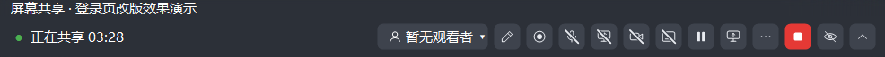
1 2 3 4 5 6 7 8 9 10 11 12 13- 观看者名单：显示「N 人观看 ▾」，点开查看和管理观看者
- 标注：在共享的屏幕上画图、写字，见下文「标注」
- 录制：在本机录制这场共享
- 麦克风：打开或关闭麦克风
- 电脑声音：开始或停止共享电脑声音
- 摄像头：打开或关闭摄像头画面
- 字幕：开始或停止为你的发言生成字幕
- 暂停 / 继续：暂停期间观看者看到「对方已暂停共享」
- 切换内容：重新选择要共享的屏幕或窗口，不中断这场共享
- 更多：弹出更多菜单，见下文
- 结束共享：红色按钮，结束这场共享
- 隐藏：完全隐藏控制条，鼠标移到屏幕顶部边缘时重新出现
- 收起 / 固定：把控制条收成顶部的小把手，鼠标移上去时临时展开；临时展开时点「固定」恢复常驻显示
观看者名单
点控制条上的「N 人观看 ▾」打开观看者名单，标题显示当前人数。名单顶部有 全员静音，每位观看者一行，可以对他单独操作：
- 静音：关闭这位观看者的麦克风，已关闭时显示「已静音」。
- 移出：把他移出这场共享，操作前会确认「确定将 某某 移出屏幕共享吗？」。
- 允许控制 / 收回控制：主动把鼠标键盘的控制权交给他，或者收回，见下文「申请控制」。
「更多」菜单
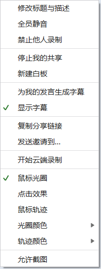
- 修改标题与描述：共享中随时修改，聊天卡片同步更新。
- 全员静音：关闭所有观看者的麦克风。
- 禁止他人录制：禁止后变为「允许他人录制」。
- 停止我的共享：暂时不再共享自己的屏幕，这场共享保留，可以再「恢复我的共享」。
- 共享画面：有其他人也在共享屏幕时出现，重新打开「共享画面」窗口，见下文多人同时共享。
- 新建白板：新建一块白板作为这场共享里的一个画面，大家可以在上面写画；关闭有笔迹的白板前会提示保存。
- 为我的发言生成字幕、显示字幕：字幕开关，前提是企业开启了「语音字幕」。
- 复制分享链接：复制一条链接，发给别人后点链接即可加入。
- 发送邀请到…：选择会话，把邀请发过去。
- 开始云端录制：把这场共享录制并保存到服务器，前提是企业开启了「云端录制」；录制中可以暂停、继续或停止。录好的录像在「录制管理」的「云端」页签里。
- 鼠标光圈、点击效果、鼠标轨迹、光圈颜色、轨迹颜色：让观看者更容易看清你的鼠标位置和点击。
- 允许截图：勾选后控制条和「共享画面」窗口可以被截图。
标注
点控制条上的画笔图标进入标注，屏幕顶部换成标注工具条，就可以直接在共享的屏幕上画图、写字，观看者同步看到。
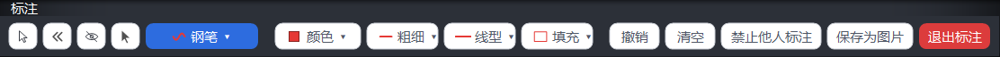
- 最左边四个图标依次是：鼠标（暂停画图，可以操作桌面上的程序，已画的标注保留）、收起工具条、隐藏工具条、选择（移动、缩放或删除已画的对象）。
- 钢笔 ▾ 是绘图工具按钮，显示当前工具，点开可以换成其他画笔、线条、箭头、形状、标号、文字、橡皮等。
- 颜色、粗细、线型、填充：设置接下来画的样式。
- 撤销 撤销上一笔，清空 清除全部标注。
- 禁止他人标注：不让观看者在你的屏幕上标注，禁止后变为「允许他人标注」。
- 保存为图片：把当前画面连同标注保存为图片。
- 退出标注：结束标注，回到普通的控制条。
加入观看
开始共享后，对方屏幕右下角会弹出邀请提示，标题栏显示倒计时「屏幕共享 · N 秒后关闭」，正文写明共享者、标题和描述。点 加入 开始观看，点 忽略 关闭提示。
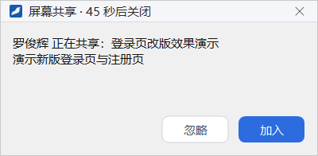
错过了提示也没关系：聊天里的屏幕共享卡片在共享进行中显示「正在共享」，点卡片下方的 加入 即可观看；共享结束后卡片显示「共享已结束」。群聊窗里还会显示一条「某某 正在共享：标题，点击加入 ›」的横幅。
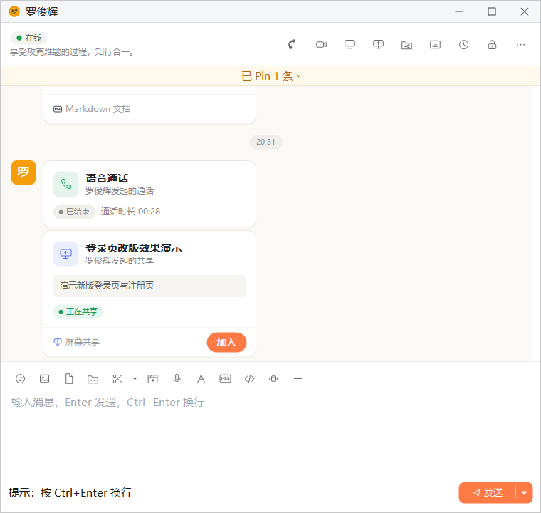
- 设了密码的共享，卡片副标题后标有「需要密码」，加入时要输入共享者告诉你的 6 位数字。
- 强制模式的共享，卡片上会注明「强制模式：加入后全屏观看、不能退出，直到共享结束」，加入前还会再确认一次。
- 正在共享自己屏幕、或正在观看另一场共享时，不能再加入新的共享。
观看窗口
观看窗口默认全屏显示。按钮都在画面顶部的一条浮动工具条上，全屏和窗口方式都一样：按钮是图标，鼠标停在上面会显示名称；工具条上方一行显示共享标题和时长。下表中的「主持人」指发起这场共享的人。
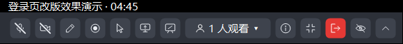
| 按钮 | 作用 |
|---|---|
| 打开麦克风 / 打开摄像头 | 开启自己的麦克风或摄像头，与共享者和其他观看者交流 |
| 标注 | 在共享的画面上标注；共享者禁止他人标注时，点了只会给出提示 |
| 录制 | 在本机录制这场共享；录制中共享者收回了录制权限，录制会停止并保存已录的部分 |
| 申请控制 | 申请控制共享者的鼠标和键盘，见下文 |
| 共享我的屏幕 | 申请把自己的屏幕也共享出来，主持人同意后生效；有多个画面时观看窗口会把它们并列显示，见下文多人同时共享 |
| 新建白板 | 申请新建一块白板，主持人同意后生效 |
| N 人观看 ▾ | 查看观看者名单 |
| 共享说明 | 查看共享者填写的描述，只在共享有描述时出现 |
| 字幕 | 打开「为我的发言生成字幕」「显示字幕」，只在字幕可用时出现 |
| 全屏 / 退出全屏 | 在全屏和窗口方式之间切换；也可以按 F11 或双击画面，全屏时按 Esc 退出全屏 |
| 离开 | 退出观看 |
| 隐藏 | 把工具条完全藏起来，鼠标移到画面顶边时临时出现 |
| 收起 | 把工具条收成顶部的小把手 |
以窗口方式观看时，工具条浮在画面区域的顶部，跟着窗口移动；标题栏显示共享标题、时长和帧率，画面左上角显示「P2P」表示双方直接连接。要回到全屏，点工具条上的 全屏、双击画面或按 F11；多人共享同时显示几块画面时，双击是放大或还原某一块，请用工具条按钮或 F11。强制模式的共享只能全屏观看，工具条上没有 全屏 和 离开，F11 和 Esc 都不起作用。
画面的清晰度由共享者在系统设置「音视频」页的「屏幕共享清晰度」里选择（1080p、2K 或 4K，默认 2K）：共享者的屏幕比所选分辨率大时按比例缩小，小时按原尺寸共享。网络变差时画面会自动变得模糊一些，网络恢复后再逐步变清晰。观看者的电脑是 Windows 7 时，系统自带的视频解码能力有限，看 2K、4K 的共享时画面可能显示不出来，这时观看窗口上会提示「对方画面的分辨率超出本机系统的解码能力，无法显示」，这时请共享者把清晰度改为 1080p。
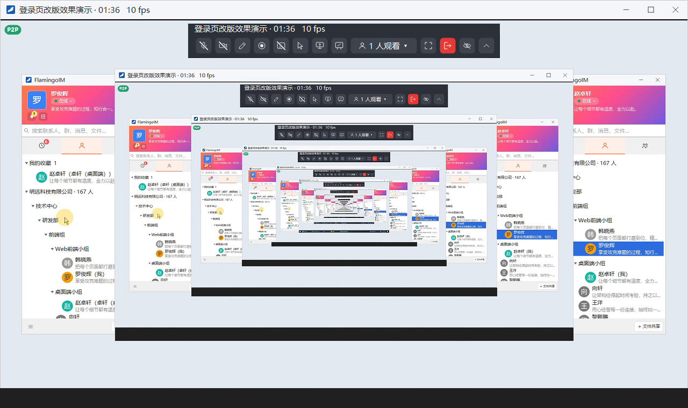
多人同时共享
一场共享里可以有几个人同时共享屏幕。每个人看到的都是全部画面，按同样的顺序并列排开：主持人的画面在最前，其余共享者的画面依次在后，白板排在最后；每块画面左上角写着共享人的名字，被观看窗口上方的工具条挡住时写在工具条下方。
- 观看者点工具条上的 共享我的屏幕 提出申请，主持人在右下角的提示里同意后，申请人会看到「选择要共享的内容」，选好屏幕或窗口后点 开始共享；点 取消 则不共享。
- 主持人在 共享画面 窗口里看，其他人在观看窗口里看。只有主持人自己在共享时这个窗口不打开；关掉之后可以从控制条的「更多」菜单重新打开。
- 自己正在共享的那一块也在里面，名字后面带「（我）」，显示的是本机采集的画面，只能看，不能申请控制。
- 主持人以外的共享者，被共享的屏幕顶部有一条共享者条，写着「你正在共享屏幕」，右边依次是 标注、屏幕当白板（只共享一个窗口时才有）、更多（勾选 允许截图）、红色的 停止共享；鼠标停在按钮上会显示它的名字。停止共享只停掉自己的画面，人仍留在共享里继续观看。最右端的 隐藏、收起 / 固定 与主持人的控制条用法相同。
- 双击一块画面把它放大，再双击还原。申请控制、录制针对放大的那一块；没有放大时针对第一块别人的画面。
- 自己在共享屏幕时，观看窗口和「共享画面」窗口不会被采进共享的画面，所以不会出现画面里套着画面；需要截图时在「更多」菜单或共享者条的菜单里勾选 允许截图。
申请控制
- 观看者点 申请控制，按钮变为「取消申请」，等待共享者同意。
- 共享者屏幕右下角弹出「某某 申请控制你的屏幕」，点同意或拒绝。共享者也可以在观看者名单里直接点 允许控制。
- 获得控制权后，观看者在画面上的鼠标和键盘操作会作用到共享者的电脑上，按钮变为「结束控制」。
控制期间，共享者的控制条上显示「某某 正在控制你的屏幕」和 收回控制 按钮（多人共享时，其他共享者屏幕顶部的共享者条上也是这样）。被控制期间共享者仍可以照常使用鼠标和键盘，不会因此收回控制；要收回时点 收回控制，或由控制者点 结束控制。
结束共享
共享者点控制条上红色的结束按钮即可结束共享。结束后，共享者和观看者都会收到「屏幕共享已结束。」的小结，列出标题、时长、分享人和参与者，点 知道了 关闭。观看者点 离开 只是自己退出，共享继续进行。
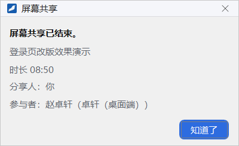
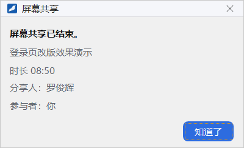